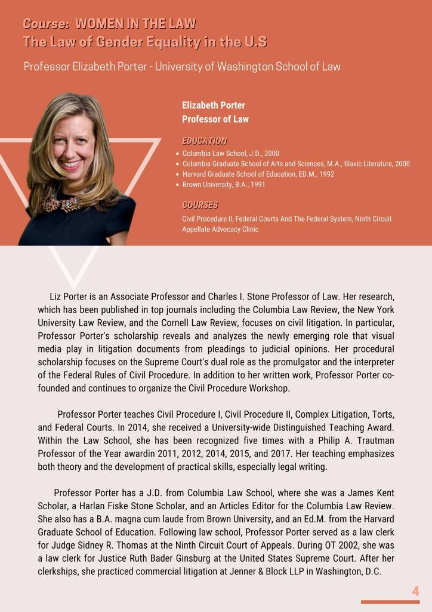
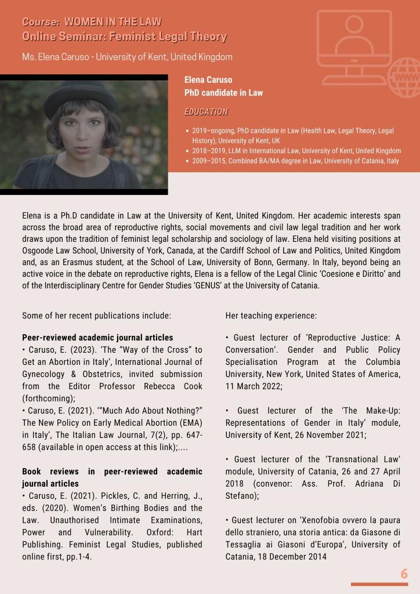
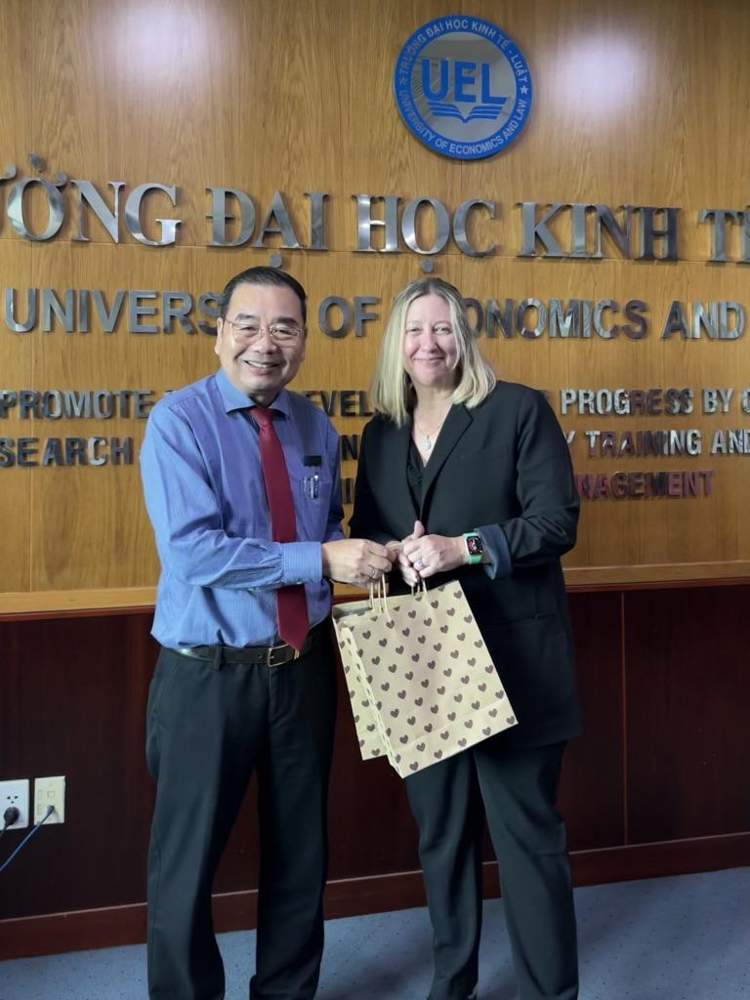
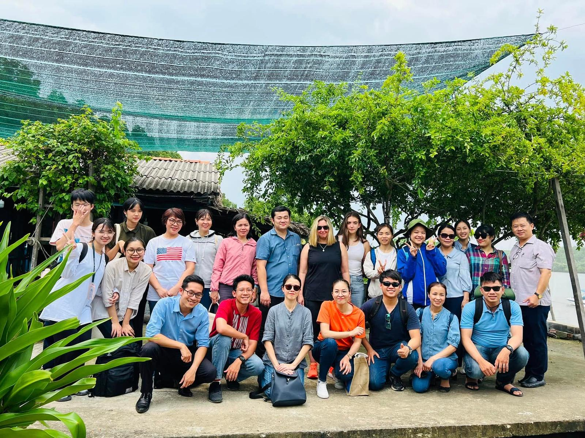
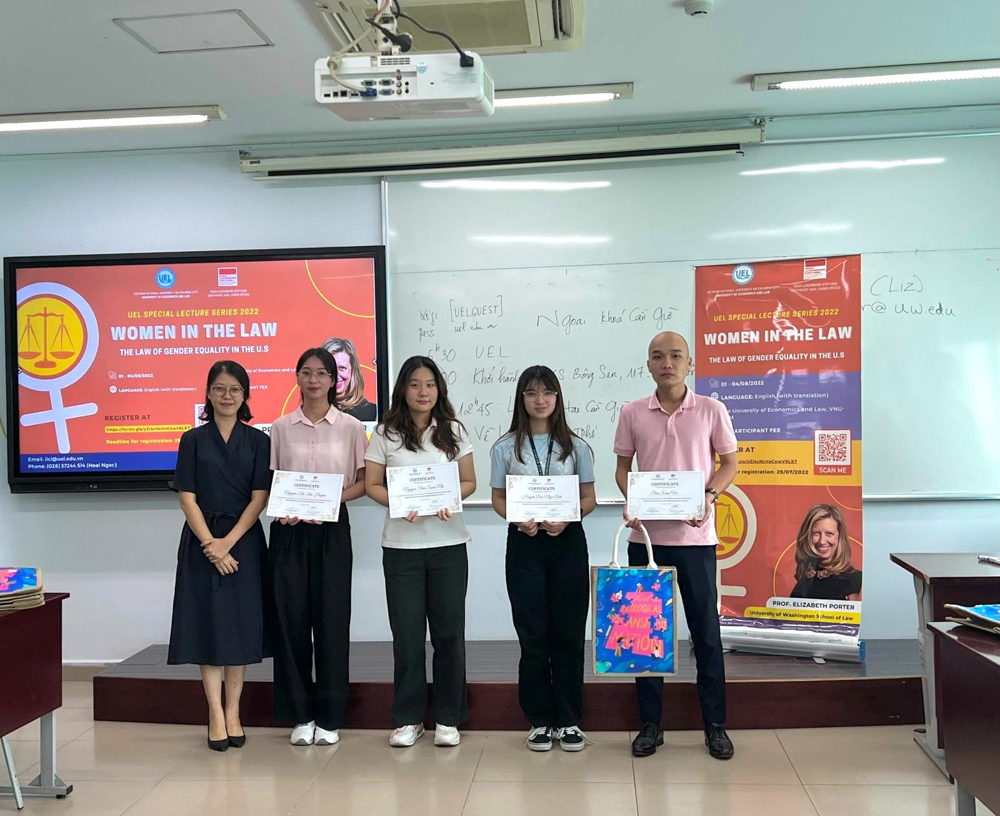

UEL Special Lecture Series 2022
The 2022 Special Lecture Series was organized within the framework of the project by the University of Economics and Law (UEL), VNU-HCM, in collaboration with the Rosa Luxemburg Stiftung Southeast Asia Office. The programme introduced key issues concerning women in law and the law of gender equality in the United States, while also creating an academic space for discussion on feminist legal theory and interdisciplinary approaches to legal research.
Speakers
The programme brought together legal scholars and gender experts, with participation from lecturers, doctoral researchers, postgraduate students, and law students from different legal education institutions in Vietnam.
Prof. Elizabeth Porter
Interim Dean, Law School, University of Washington

Prof. Porter is an Associate Professor and Charles I. Stone Professor of Law. Her research, published in leading journals including the Columbia Law Review, New York University Law Review, and Cornell Law Review, focuses on civil litigation. She teaches Civil Procedure, Complex Litigation, Torts, and Federal Courts, and received a University-wide Distinguished Teaching Award in 2014.
Ms. Elena Caruso
PhD Candidate in Law, University of Kent, UK

Elena Caruso's research focuses on reproductive rights, social movements, and the civil law tradition, drawing on feminist legal scholarship and the sociology of law. She has held visiting positions at Osgoode Hall Law School, Cardiff School of Law and Politics, and the University of Bonn.
Distinguished Speakers
Prof. Elizabeth Porter
Interim Dean, Law School, University of Washington
Prof. Porter is an Associate Professor and Charles I. Stone Professor of Law. Her research, published in leading journals including the Columbia Law Review, New York University Law Review, and Cornell Law Review, focuses on civil litigation. She teaches Civil Procedure, Complex Litigation, Torts, and Federal Courts, and received a University-wide Distinguished Teaching Award in 2014.
Ms. Elena Caruso
PhD Candidate in Law, University of Kent, UK
Elena Caruso’s research focuses on reproductive rights, social movements, and the civil law tradition, drawing on feminist legal scholarship and the sociology of law. She has held visiting positions at Osgoode Hall Law School, Cardiff School of Law and Politics, and the University of Bonn.
Lecture Programme
| Date | Session | Theme & Activity |
|---|---|---|
| 01 August 2022 | Session 1 | Prof. Elizabeth Porter — Introduction to Women in the Law |
| 02 August 2022 | Session 2 (AM) | Prof. Elizabeth Porter — The Law of Gender Equality in the U.S. |
| Seminar (PM) | Elena Caruso (University of Kent, UK) — Feminist Legal Theory (Online) | |
| 03 August 2022 | Session 3 | Prof. Elizabeth Porter — Constitutional Rights and Gender |
| 04 August 2022 | Field (AM) | Can Gio Study Visit — Mangrove Protection and Women’s Livelihood Development |
| Closing (PM) | Programme Review, Participant Feedback & Certificate Awarding |
Proceedings & Core Themes
History of feminist movements
An overview of the development of feminist movements across different legal and historical periods in the U.S.
U.S. Supreme Court decisions
Case studies on key judgments addressing gender equality within the U.S. legal system.
Civil rights & constitutional law
Examination of constitutional issues and fundamental rights from a gender and equality perspective.
Legal methodology
Application of feminist legal theory to legal research methodology and the interpretation of law.
Visual Archive


